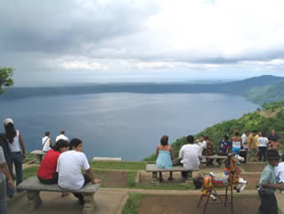

Location and Origin of Title
Update-January 9, 2012
On November 18, 2011, following "Orders from Above" the Appeals Court of Masaya, that had already upheld the Rights of Dominion and Posession of Justin Dobson and his wife in two prior cases, over-turned a (2010) lower court (District) ruling, in direct violation of the Constitution of Nicaragua, the Law of Municipalities of Nicaragua and Logic, and instructed the Public Registry to Cancel the inscription of Title Transfer in the names of Mr Dobson and his wife.Sources within the Masaya Court and the Supreme Court had previously warned that Dra. Juana Mendez, of the Supreme Court, infamous for her role as Daniel Ortega's "flunky" in toying with ex-President Arnoldo Aleman, was instructing the Masaya Magistrates to rule against Mr Dobson and his wife.
This is Manufacured Sentence Designed to give Credence to Theft
- Violates the Constitution when it applies law that was Repealed and Superceded.
- Violates the Constitution by stating that the Procurator General of the Rebublic (PGR) "Subsumes" representation of the Municipality of Catarina, two autonomous entities
- Applies a law (repealed) that was specific and did not apply to Agrarian Reform titles
- Ignores all prior cases and evidence including a signed constancia from the Ministry of Property upholding the title and its succesors
- States that since there is construction on the property it must be protected - the very same that was financed by the Austrian Development Corporation, financing that they cut off following an investigation
 The Property was part of a larger property owned by TerraNica S.A. (Somosa) which was confiscated by the Sandinista Government in 1981 (published in the gaceta 182 dated July 22)
On June 22, 1984, the Finca Terranica was Assigned, by way of Agrarian Reform Title issued by the Ministry of Agrarian Reform, and signed by Jaime Wheelock Roman, to the Cooperativa Felix Cruz Hernandez.
In 2007, the Ministry of Housing through its OOT office (which maintains the original registry of all Agrarian Reform Titles) issued a "Constancia" Ratifying this Original Title.
The Cooperativa had no issue with their Title over this land until 2000.
An important point to note is that the Assignment of Title divided the Land into Two adjoining Parcels, each being assigned Unique numbers in the Registry. Subsequently, one of these parcels was Acquired (Purchased) from the Cooperativa by none other than the Wife of Jaime Wheelock Roman. In 2002, this land was then sold to a US couple, Tom and Christine Kepping, who have since begun development of the property. There has never been any issue raised by anybody about the Validity of Tom and Christine's land and their Title over it.
If the Kepping Title is Clean and Solid, then so must also be the Cooperativa's - They share the same Mother Title!